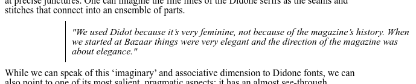
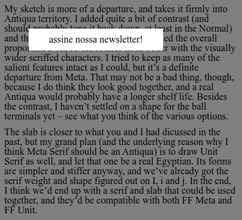

CSS 2: Exercícios
Em todos os exercícios, você NÃO PODE MODIFICAR O HTML, só o CSS.
Em nenhum dos exercícios o gabarito representa a única resposta possível. Em alguns gabaritos, aproveitamos a oportunidade para apresentar algumas propriedades úteis.
Exercício 1: Pula Coelhinho
Clique aqui para abrir o CodePen deste exercício.
Uma pseudo-classe é um "extra" que adicionamos ao final de um seletor para indicar que as propriedades do bloco só devem ser aplicadas quando o elemento estiver em um estado específico.
Por exemplo, as propriedades do bloco
p:hover {
/* ... */
}só são aplicadas a um parágrafo quando o mouse passa por cima dele.
Use a pseudo-classe :hover e posicionamento relativo para
fazer cada coelhinho pular quando o mouse passa por cima dele. Por "pular",
entenda "deslocar 10 pixels para cima".
Dicas:
top,left,bottom,rightaceitam valores negativos.
continuar ou terminar
img:hover {
position: relative;
top: -10px;
}Exercício 2: Faça Seu Próprio Botão
Clique aqui para abrir o CodePen deste exercício.
Outro exemplo de pseudo-classe: as propriedades do bloco
p:active {
/* ... */
}só são aplicadas a um parágrafo quando o usuário clica em cima dele com o mouse.
Use a pseudo-classe :active para fazer o retângulo
"afundar" quando o usuário
clica em cima dele com o mouse. Ou seja, o efeito visual do clique deve ser como
no gif abaixo.

Isso significa:
-
usar cores diferentes de borda dependendo dele estar "normal" ou "clicado";
-
deslocar o texto um pouco para baixo e para a direita quando ele está "clicado".
Dicas:
-
mude o posicionamento relativo do elemento
span; -
lembre da aula passada e pense no que o seletor
.botao:active spansignifica.
continuar ou terminar
.botao:active {
border-top-color: black;
border-right-color: gray;
border-bottom-color: gray;
border-left-color: black;
}
.botao:active span {
position: relative;
top: 1px;
left: 1px;
}Exercício 3: Fancy Quote
Clique aqui para abrir o CodePen deste exercício.
Repare que o código HTML tem um elemento blockquote, que
representa uma
citação. A formatação desse elemento está muito sem graça! Combine propriedades
vistas em aulas anteriores com posicionamento relativo para
conseguir o destaque abaixo.

continuar ou terminar
blockquote {
position: relative;
top: 0;
left: 100px;
border-left: 1px solid black;
padding: 10px;
font-style: italic;
}Exercício 4: Menu Lateral
Clique aqui para abrir o CodePen deste exercício.
Use posicionamento fixo para posicionar o
elemento nav
ao lado
do texto e deixá-lo com o visual abaixo. Esse elemento deve "flutuar", ou seja,
permanecer no mesmo lugar mesmo se o usuário rolar a página para baixo.

continuar ou terminar
nav {
position: fixed;
top: 10px;
left: 400px;
color: white;
background-color: black;
}
li {
margin: 10px;
}Exercício 5: Overlay Popup
Clique aqui para abrir o CodePen deste exercício.
Repare que temos um overlay e um popup no final do código HTML. Você deve fazer com que o visual da página fique como na imagem abaixo.

Mais especificamente, o overlay é um retângulo preto e semitransparente que ocupa a tela toda e o popup está a 50 pixels do topo e 50 pixels da esquerda.
Dicas:
-
use posicionamento fixo tanto no overlay quanto no popup;
-
esta página pode ajudar;
-
pense no que significa "ocupa a tela toda" em termos de porcentagem.
continuar ou terminar
.overlay {
position: fixed;
top: 0;
left: 0;
width: 100%;
height: 100%;
background-color: black;
opacity: 0.5;
}
.popup {
position: fixed;
top: 50px;
left: 50px;
width: 200px;
padding: 10px;
background-color: white;
text-align: center;
}Exercício 6: Corner Chatbot
Clique aqui para abrir o CodePen deste exercício.
Repare que temos um chat no final do código HTML. Use posicionamento fixo para posicionar esse chat no canto inferior direito e deixá-lo com o visual abaixo. Esse elemento deve "flutuar", ou seja, permanecer no mesmo lugar mesmo se o usuário rolar a página para baixo.

continuar ou terminar
.chat {
position: fixed;
bottom: 0;
right: 10px;
border-width: 1px 1px 0 1px;
border-style: solid;
border-color: black;
padding: 10px;
background-color: white;
border-radius: 10px 10px 0 0;
}Exercício 7: Tower Defense
Clique aqui para abrir o CodePen deste exercício.
Use posicionamento absoluto para posicionar uma torre em cada canto. Mas atenção! O posicionamento deve permanecer correto mesmo se o navegador for redimensionado.

Dicas:
- repare que este é um dos poucos exercícios que permitem mudar os blocos existentes. Certamente deve haver um motivo para isso...
continuar ou terminar
.terrain {
position: relative;
/* ... */
}
.a {
position: absolute;
top: 0;
left: 0;
}
.b {
position: absolute;
top: 0;
right: 0;
}
.c {
position: absolute;
bottom: 0;
left: 0;
}
.d {
position: absolute;
bottom: 0;
right: 0;
}Exercício 8: Quadro de Cortiça
Clique aqui para abrir o CodePen deste exercício.
Use posicionamento absoluto para posicionar uma tachinha em cada canto da folha de papel. Mas atenção! O posicionamento deve permanecer correto mesmo se o navegador for redimensionado.

Dicas:
- repare que este é um dos poucos exercícios que permitem mudar os blocos existentes. Certamente deve haver um motivo para isso...
continuar ou terminar
.board {
position: relative;
/* ... */
}
.a {
position: absolute;
bottom: 15px;
right: 15px;
}
.b {
position: absolute;
bottom: 15px;
right: 90px;
}
.c {
position: absolute;
bottom: 135px;
right: 90px;
}
.d {
position: absolute;
bottom: 135px;
right: 15px;
}Exercício 9: Livro
Clique aqui para abrir o CodePen deste exercício.
Combine propriedades vistas em aulas anteriores com posicionamento absoluto para conseguir o visual abaixo.

Dicas:
top,right,bottom,lefttambém aceitam porcentagens...
continuar ou terminar
.author {
position: absolute;
top: 0;
left: 0;
color: white;
}
.title {
position: absolute;
left: 50%;
bottom: 0;
}